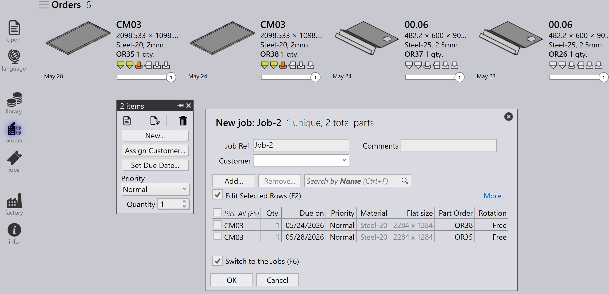

Orders
Een order definieert welke onderdelen moeten worden geproduceerd, in welke hoeveelheid en tegen wanneer. Het stuurt de productieplanning en -uitvoering in TruSmartCAM. Orders kunnen worden aangemaakt of geïmporteerd met verschillende methoden, en ze kunnen worden geconverteerd naar jobs voor productieplanning.
Order paneel

|
|


Orders bewerken
Selecteer een of meer orders en klik met de rechtermuisknop om algemene orderdetails te wijzigen zoals hoeveelheid, deadline, prioriteit en klantinformatie.
Als meerdere geselecteerde orders verschillende waarden vereisen, gebruik dan de optie Check-out for Editing om elke order afzonderlijk te bewerken op basis van de vereiste.


Alle wijzigingen die aan de orders worden aangebracht, worden onmiddellijk toegepast op de database. Gebruik de opdracht Wissen om orders uit de orderbibliotheek te verwijderen.
| De opdracht Delete verwijdert alleen de orders. Onderdelen die zijn gekoppeld aan de respectieve orders worden niet verwijderd uit de onderdelenbibliotheek. |
Orders plannen
Selecteer een of meer orders, klik met de rechtermuisknop en klik op Nieuw… → Job om de geselecteerde orders te converteren naar jobs. Gebruik de opties Sorteren en Filteren om relevante orders te groeperen voordat u jobs aanmaakt.

Zodra de orders zijn geconverteerd naar een job:
-
Wordt de job verplaatst naar de Jobs-pagina
-
Worden de orders verwijderd uit de Orders-lijst
-
Kan de standaard job planning workflow vervolgens worden gebruikt voor productieplanning en nesting

Voor meer informatie over de job planning workflow, raadpleeg Auto Plan
Aanvullende informatie
-
Als een job met orders wordt verwijderd, worden de bijbehorende orders automatisch teruggeplaatst op de Orders Ready-pagina, tenzij de job of het onderdeel is gemarkeerd als Completed.

-
Orders kunnen worden toegevoegd aan of verwijderd uit een bestaande job via het venster Job bewerken op basis van de productievereisten.